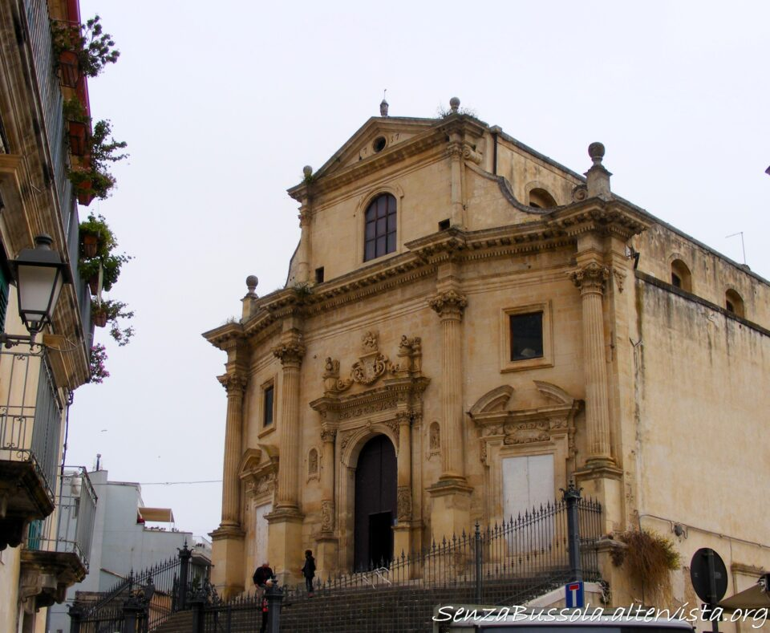
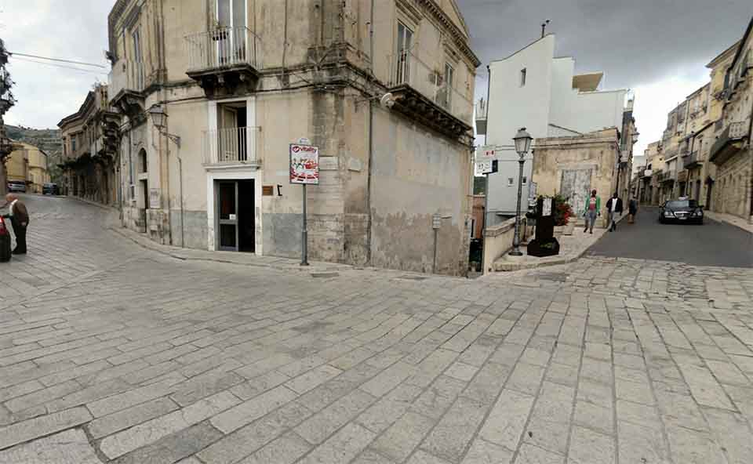
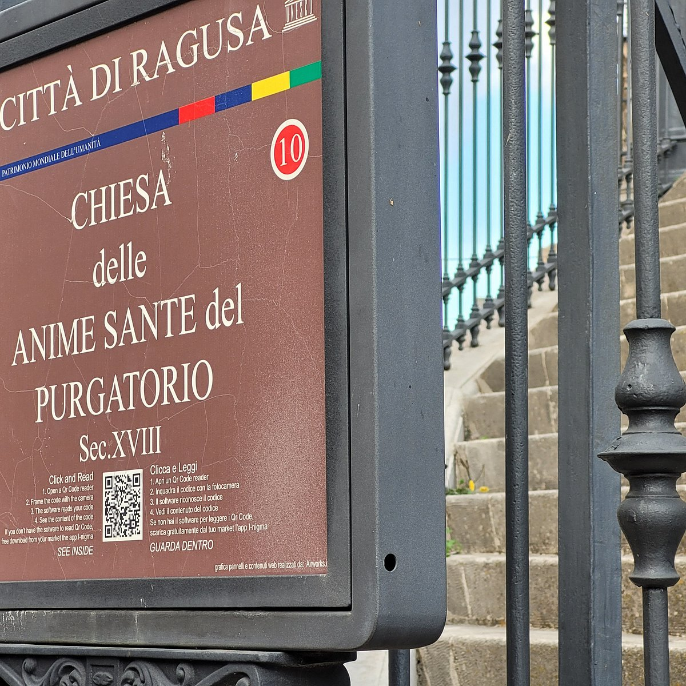
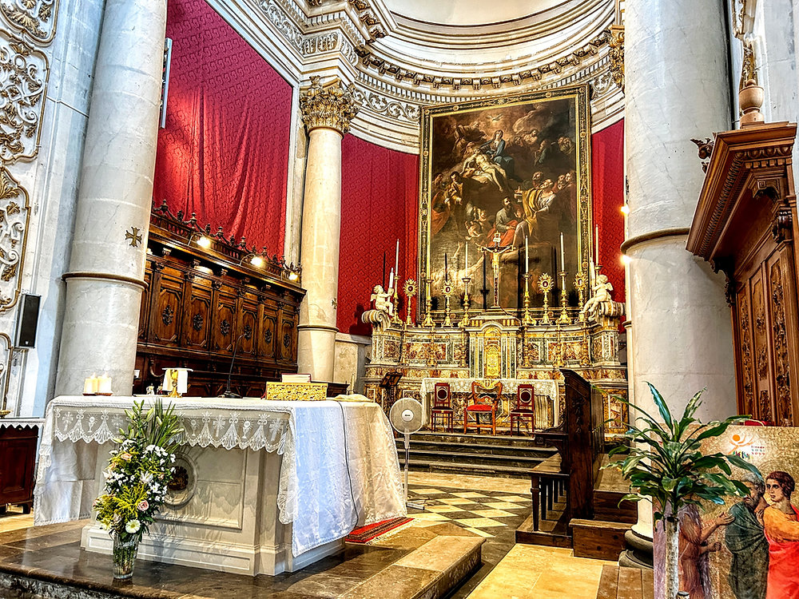

Piazza della Repubblica è il cuore antico di Ragusa Ibla, un crocevia monumentale su cui svetta la Chiesa delle Anime Sante del Purgatorio con il suo iconico campanile. La piazza è intrisa di una devozione profonda e misteriosa, legata alla credenza popolare che le anime dei defunti vaghino tra questi vicoli in cerca di preghiere per abbreviare il loro passaggio verso il Paradiso.
Piazza della Repubblica, meglio conosciuta come piazza degli Archi, è una delle piazze più belle e rappresentative della città di Ragusa. La piazza si trova nel cuore del centro storico di Ragusa Ibla, ed è delimitata da palazzi storici e chiese barocche. È stata costruita nel XVII secolo, dopo il terremoto del 1693, che distrusse gran parte della città. Il progetto fu affidato all’architetto Francesco Battaglia, che la progettò in stile barocco. I palazzi che circondano la piazza sono tutti di epoca barocca, e sono caratterizzati da facciate riccamente decorate. Le chiese che si trovano in piazza della Repubblica sono tutte di epoca barocca, e sono caratterizzate da facciate riccamente decorate. Tra le chiese più importanti si possono menzionare: Chiesa di Santa Maria dell’Itria; Chiesa delle Santissime Anime del Purgatorio. La piazza è un importante luogo di ritrovo per i cittadini e i turisti. È sede di numerosi eventi culturali e religiosi.


La Chiesa delle Santissime Anime del Purgatorio sorge in piazza della Repubblica, meglio nota come piazza degli Archi, per via degli archi di un acquedotto che sormontavano il quartiere fino al terremoto del 1693, dal quale la chiesa uscì indenne. Secondo la leggenda nel punto in cui sorge la chiesa si trovava prima un palazzo nobiliare. Qui abitava una coppia di giovani sposi, ma della fanciulla si innamorò un sacerdote. Di fronte al rifiuto da parte di lei, lui per vendetta la fece arrestare dalla Santa Inquisizione, insieme al marito, accusandoli di eresia.
Il sacerdote, infatti, aveva nascosto nella loro alcova una Bibbia protestante, considerata sacrilega. La coppia venne giustiziata ma il prete, preso dal rimorso, decide di fare ammenda costruendo un luogo sacro al posto della casa dei due, ingiustamente condannati e uccisi. Acquistò l’edificio, lo demolì e sulle fondamenta fece erigere la chiesa, conservando la cappella privata del palazzo, della quale si potrebbe ancora ammirare oggi l’altare. Le Anime del Purgatorio che danno il nome alla chiesa, dunque, sarebbero quelle fatte ingiustamente giustiziare.

Scansiona il codice QR per raggiungere Piazza della Repubblica.